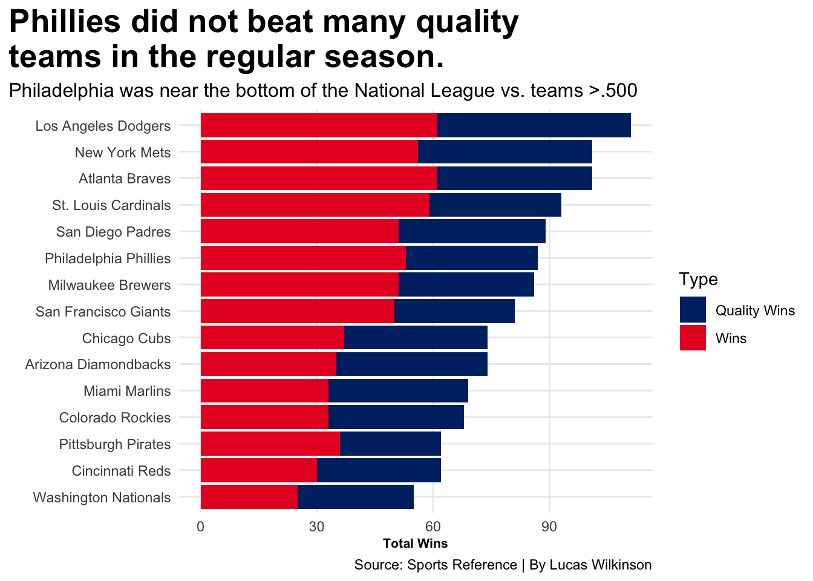

As a petty Mets fan who watched the Philadelphia Phillies win the National League pennant, I am starting to believe that Major League Baseball seasons are not as significant as they used to be.
The 2022 MLB season contained a new postseason platform. MLB expanded the bracket to allow one more wild-card team from each league. This means that six teams from the National League will make the postseason. The two teams with the best record received a first-round bye, and the other four teams faced off in a three-game series to advance to the next round.
The National League East was a highlighted division entering the 2022 Major League Baseball season, because of the expected competition to arise throughout the season. The Atlanta Braves were World Series champions in the season prior. The New York Mets loaded up with talent over the offseason, and the Philadelphia Phillies signed Kyle Schwarber and Nick Castellanos to multi-year deals. Spoiler alert, all three teams made the postseason.
The Phillies roster was the sixth highest payroll in the 2022 season, however they got off to a 22-29 start through their first 51 games. This led to the Phillies firing manager Joe Girardi, and putting the team in the hands of Rob Thompson. The Phillies record under Thompson was 65-46.
Code
library(tidyverse)library(ggalt)library(gt)library(ggrepel)NLStandings <-read_csv("~/Documents/SPMC 350 - Fall 2022/NationalLeagueStandings2.csv") %>%filter(Rk >0 )mlb_hitting <-read_csv("~/Documents/SPMC 350 - Fall 2022/MLB-HITTING.csv") mlb_pitching <-read_csv("~/Documents/SPMC 350 - Fall 2022/mlb-pitching.csv")combined <- mlb_hitting %>%inner_join(mlb_pitching, by =c("Tm", "G"))SimpleStandings <- NLStandings %>%select(Tm, W, L, GB)Standings <- NLStandings %>%separate("500", into=c("Wins", "Losses"), sep="-") ChartData <- Standings %>%select( Tm, W, Wins ) %>%mutate(Wins =as.numeric(Wins)) %>%rename(`Total Wins`= W, `Quality Wins`= Wins) %>%mutate(Wins =`Total Wins`-`Quality Wins`) %>%select(Tm, Wins, `Quality Wins`)ChartData %>%pivot_longer(cols=-Tm, names_to="Type", values_to="Total") -> Stackedph <- mlb_hitting %>%filter(Tm =="Philadelphia Phillies")pi <- mlb_pitching %>%filter(Tm =="Philadelphia Phillies")phils <- combined %>%filter(Tm =="Philadelphia Phillies")SimpleStandings %>%gt() %>%tab_header(title ="The Phillies were a mid-tier National League team in the 2022 regular season",subtitle ="Philadelphia played just good enough to make the playoffs" ) %>%tab_style(style =cell_text(color ="black", weight ="bold", align ="left"),locations =cells_title("title"))%>%tab_style(style =cell_text(color ="black", align ="left"),locations =cells_title("subtitle") ) %>%tab_source_note(source_note =md("**By:** Lucas Wilkinson | **Source:** [Sports Reference](https://www.baseball-reference.com/leagues/NL/2022-standings.shtml)") ) %>%tab_style(locations =cells_column_labels(columns =everything()),style =list(cell_borders(sides ="bottom", weight =px(3)),cell_text(weight ="bold", size=12) ) ) %>%opt_row_striping() %>%opt_table_lines("none") %>%tab_style(style =list(cell_fill(color ="#002D72"), cell_text(color ="#E81828") ),locations =cells_body(rows = Tm =="Philadelphia Phillies") )
The Phillies were a mid-tier National League team in the 2022 regular season
Philadelphia played just good enough to make the playoffs
The Phillies limped into the postseason this year as the sixth seed in the playoffs. The standings visually show how close the race was. However, the Phillies were not really a hot team to end the season. They went 7-13 in their last 20 games, and lost the last two games of the season. The Phillies finished 3rd place in the NL East.
Code
ggplot() +geom_bar(data=Stacked, aes(x=reorder(Tm,Total), weight=Total, fill=Type)) +scale_fill_manual(values =c("#002D72", "#E81828")) +coord_flip() +labs(x="", y="Total Wins", title="Phillies did not beat many quality \nteams in the regular season.", subtitle="Philadelphia was near the bottom of the National League vs. teams >.500",caption ="Source: Sports Reference | By Lucas Wilkinson") +theme_minimal() +theme(plot.title =element_text(size =20, face ="bold"),plot.title.position ="plot" , axis.title =element_text(size =8, face ="bold"), plot.subtitle =element_text(size=12), panel.grid.minor =element_blank() )

The Phillies also were not beating many teams above .500. I classified those wins as quality wins. Philadelphia was 34-47 against quality teams. I am still unsure how they were so bad against good teams until they reached the playoffs.
Code
ggplot() +geom_point(data=combined, aes(x=ERA, y=BA)) +geom_point(data=phils, aes(x=ERA, y=BA), color="#E81828") +coord_flip()+geom_point(data=phils, aes(x=`ERA`, y=`BA`), color="#E81828") +geom_text_repel(data=phils, aes(x=`ERA`, y=`BA`, label="Phillies")) +geom_vline(xintercept =3.96) +geom_hline(yintercept = .243) +labs(x="ERA", y="Offensive Batting Average", title="Philadelphia was average in team ERA, \nnot amazing at hitting.", subtitle="The Phillies had an okay regular season in many aspects.",caption ="Source: Sports Reference | By Lucas Wilkinson") +theme_minimal() +theme(plot.title =element_text(size =20, face ="bold"),axis.title =element_text(size =8, face ="bold"), plot.subtitle =element_text(size=10) )
I correlated team ERA (pitching) and offensive batting average to see how Philadelphia matched up against every MLB team over the season. The black lines are league averages. The Phillies were right at average for team ERA, and just above the league average for team batting average. These stats are not the only way to define an offense and defense, but they are a good starting point.
The NLCS contained the fifth and sixth seeded teams. I don’t believe this should happen often, and if MLB wants to stay relevant they need their best teams playing late in the postseason. The 162 game season is starting to seem outdated. I believe the MLB should rethink either the regular season platform, or the postseason platform.